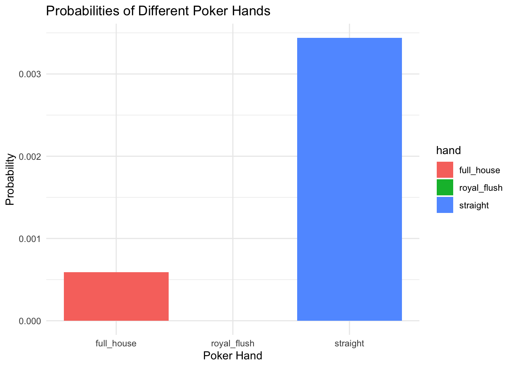

suppressPackageStartupMessages(library(tidyverse))
suppressPackageStartupMessages(library(ggplot2))
suppressPackageStartupMessages(library(purrr))
#use crossing function to associate each of the values with one of each of the suits
deck <- crossing(value = c(2:10, "J", "Q", "K", "A"),
suit = c("Spades", "Diamonds", "Clubs", "Hearts"))Poker Hands Probability
In this project I plan to simulate the probability of being dealt a specific hand while playing poker. First I will simulate a deck of cards and then simulate the drawing of a 5 card hand with a function. Then I will use another function to check if the hand drawn at random matches a specific, special hand such as a full house, royal flush, etc.
First, lets simulate a deck of cards
Now, lets create a function that will deal a random hand of 5 cards from the deck.
deal_hand <- function(deck){
#pick random row numbers then index through deck data set to pick those specific rows
hand <- deck[sample(nrow(deck), 5, replace = FALSE), ]
return(hand)
}Now, lets write a few functions that will check for special hands.
check_straight <- function(hand){
value_order <- c("2", "3", "4", "5", "6", "7", "8", "9", "10", "J", "Q", "K",
"A")
ordered_hand_values <- match(hand$value, value_order)
is_straight <- all(diff(sort(ordered_hand_values)) == 1)
return(is_straight)
}
check_royal_flush <- function(hand){
royal_values <- c("10", "J", "Q", "K", "A")
is_flush <- if_else(length(unique(hand$suit)) == 1, TRUE, FALSE)
is_royal <- if_else(all(royal_values %in% hand$value), TRUE, FALSE)
return(is_flush && is_royal)
}
check_full_house <- function(hand){
value_frequency <- table(hand$value)
#Gives True if there exactly 2 unique values and there are 3 repeats of the first value and 2 repeats of the second
suppressWarnings(if_else(length(value_frequency) == 2 &
all(value_frequency == c(3,2)), TRUE, FALSE))
}Now, say this is a specific night at a casino and we want to know the probability that someone will be dealt a full house or a royal flush. Lets map these functions over numerous iterations in order to model this.
set.seed(738)
iterations <- 100000
results <-
tibble(full_house = mean(map_lgl(1:iterations, ~check_full_house(deal_hand(deck)))),
royal_flush = mean(map_lgl(1:iterations, ~check_royal_flush(deal_hand(deck)))),
straight = mean(map_lgl(1:iterations, ~check_straight(deal_hand(deck)))))
results <- results|>
pivot_longer(cols = everything(), names_to = "hand", values_to = "probability")Now lets plot these results using a bar plot.
ggplot(results, aes(x = hand, y = probability, fill = hand)) +
geom_bar(stat = "identity") +
labs(title = "Probabilities of Different Poker Hands",
x = "Poker Hand",
y = "Probability") +
theme_minimal()
As we can see on the bar plot, a straight is the most common out of all the hands followed a full house and then a royal flush. With this information we can start to understand how common it is to be dealt certain hands in poker. This can be useful when trying to curb cheating attempts and or trying to place bets. This could also be helpful when designing online poker games and attempting to accurately replicate a real life game.